<!DOCTYPE html>
<html lang="zh">
<head>
  <meta charset="UTF-8">
  <meta name="viewport" content="width=device-width, initial-scale=1.0, maximum-scale=1.5, user-scalable=yes">
  <title>琉璃神社导航</title>
  <link rel="icon" type="image/x-icon" href="images/favicon.png">
  <!-- Font Awesome 6 图标库 -->
  <link rel="stylesheet" href="https://cdnjs.cloudflare.com/ajax/libs/font-awesome/6.0.0-beta3/css/all.min.css">
  <!-- 镜像配置 · 外置琉璃双镜 -->
  <script src="js/links.js"></script>
  <style>
    /* ========== 背景固定 · 壁纸永恒 ========== */
    * { margin: 0; padding: 0; box-sizing: border-box; }
    html, body {
      width: 100%; 
      height: 100vh;
      overflow: hidden;
      background-color: #0a1015;
      background-image: url('images/topBG.png');
      background-repeat: no-repeat;
      background-attachment: fixed;
      background-size: cover;
      background-position: center center;
      font-family: 'Helvetica Neue', 'Segoe UI', 'Noto Sans CJK', 'Microsoft YaHei', sans-serif;
      font-weight: 300;
      color: #ede7db;
      line-height: 1.6;
    }
    @media screen and (max-width: 768px) {
      html, body {
        height: 100%;
        overflow: hidden;
      }
      body { background-image: url('images/topBG-phone.png') !important; }
    }
    body {
      display: flex;
      flex-direction: row;
      height: 100vh;
      min-height: 100vh;
      backdrop-filter: brightness(0.96) blur(1.5px);
    }

    /* ---------- 琉璃侧栏 · 桌面左侧 ---------- */
    .sidebar {
      width: 280px;
      background-color: rgba(10, 22, 30, 0.8);
      backdrop-filter: blur(14px);
      border-right: 1.5px solid #5f5a4c;
      display: flex;
      flex-direction: column;
      flex-shrink: 0;
      transition: width 0.3s cubic-bezier(0.33, 1, 0.68, 1);
      box-shadow: 6px 0 24px rgba(0,0,0,0.6);
      z-index: 30;
      height: 100vh;
      overflow-y: auto;
    }
    .sidebar.collapsed { width: 80px; overflow-y: hidden; }
    .sidebar .sidebar-header {
      display: flex;
      align-items: center;
      justify-content: space-between;
      padding: 20px 18px;
      border-bottom: 1px solid #9d8670;
    }
    .sidebar.collapsed .sidebar-header { justify-content: center; padding: 20px 0; }
    .sidebar-header h3 {
      display: flex;
      align-items: center;
      font-size: 1.5rem;
      font-weight: 380;
      letter-spacing: 6px;
      color: #fffbee;
      text-shadow: 0 0 8px #a5664b;
      margin: 0;
      white-space: nowrap;
    }
    .sidebar.collapsed .sidebar-header h3 { display: none; }
    .sidebar-logo {
      height: 2.2rem; width: auto;
      animation: none !important;
      margin-right: 12px;
      filter: drop-shadow(0 0 8px rgba(220, 180, 120, 0.6));
      vertical-align: middle;
    }
    .sidebar.collapsed .sidebar-logo { display: none; }
    .toggle-btn {
      background: none; border: 1.2px solid #b89a7a; color: #edd6b0;
      width: 36px; height: 36px; border-radius: 50%;
      display: flex; align-items: center; justify-content: center;
      cursor: pointer; font-size: 1.3rem; transition: 0.25s;
    }
    .toggle-btn:hover {
      background-color: #be9e7b; color: #0e1419; border-color: #f5e6d3;
    }
    .sidebar.collapsed .toggle-btn i { transform: rotate(180deg); }

    .mirror-title {
      padding: 20px 16px 8px;
      font-size: 1rem; letter-spacing: 6px; color: #cbb295;
      border-bottom: 1px dashed #5f5a4c; margin-bottom: 8px; white-space: nowrap;
    }
    .sidebar.collapsed .mirror-title { display: none; }

    .mirror-list {
      list-style: none; padding: 8px 12px;
      display: flex; flex-direction: column; gap: 16px;
    }
    .sidebar.collapsed .mirror-list { display: none; }

    .mirror-item { width: 100%; }
    .mirror-link {
      display: flex; align-items: center; gap: 16px;
      padding: 14px 18px; background-color: rgba(28, 38, 46, 0.7);
      border: 1px solid #7a6a5a; border-radius: 40px;
      font-size: 1.3rem; font-weight: 400; letter-spacing: 6px;
      color: #f3ecdb; text-decoration: none; transition: all 0.25s;
      backdrop-filter: blur(4px); white-space: nowrap;
    }
    .sidebar.collapsed .mirror-link { padding: 14px 0; justify-content: center; border-radius: 30px; }
    .mirror-link i { font-size: 1.7rem; width: 28px; text-align: center; }
    .sidebar.collapsed .mirror-link span { display: none; }
    .mirror-link.active {
      background-color: #dac09a; border-color: #fbead0; color: #1a1e24;
      box-shadow: 0 0 20px #c79a6e;
    }
    .mirror-link.active i { color: #2c1e14; }
    .mirror-link:hover:not(.active) {
      background-color: #4f4a42; border-color: #c9aa7b; transform: translateY(-3px);
    }

    /* ---------- 主殿 · 琉璃社 ---------- */
    #top {
      flex: 1; 
      display: flex; 
      flex-direction: column;
      min-width: 0;
      height: 100vh;
      overflow: hidden;
    }
    #top_main {
      flex: 1 1 auto;
      overflow-y: auto;
      -webkit-overflow-scrolling: touch;
      width: 100%;
      padding: 30px 30px 20px; 
      display: flex; 
      flex-direction: column; 
      align-items: center;
    }
    .main-wrapper {
      max-width: 900px;
      width: 100%;
      margin: 0 auto;
      display: flex;
      flex-direction: column;
      align-items: center;
    }
    #top_logo { margin-bottom: 5px; padding: 10px 0; text-align: center; }
    .spin-logo {
      animation: RINNE 18s linear infinite; max-width: 100%; height: auto;
      max-height: 140px; object-fit: contain;
      filter: drop-shadow(0 0 16px rgba(220, 180, 120, 0.5));
      transition: transform 0.4s ease;
    }
    .spin-logo:hover { animation-duration: 6s; }
    .static-title {
      max-width: 90%; height: auto; max-height: 90px; object-fit: contain;
      filter: drop-shadow(0 4px 12px #34281c);
    }
    .hr_kagami {
      width: 60%; margin: 24px auto 28px; border: 0;
      border-bottom: 2px solid #c9aa7b; opacity: 0.7;
      box-shadow: 0 1px 12px rgba(201, 170, 123, 0.5);
    }

    /* ---------- 五色书签 & 磁力工具 ---------- */
    .bookmark-row {
      display: flex; flex-direction: column; align-items: center;
      gap: 18px; margin: 28px 0 20px; width: 100%;
    }
    .bookmark-item {
      width: 100%; max-width: 400px;
      background: rgba(20, 30, 38, 0.7); backdrop-filter: blur(8px);
      border: 1px solid #a48e78; border-radius: 60px;
      padding: 12px 24px;
      font-size: 1.1rem;
      font-weight: 380; letter-spacing: 6px;
      color: #fffbee; text-decoration: none;
      transition: all 0.25s; box-shadow: 0 5px 12px rgba(0,0,0,0.3);
      display: flex; align-items: center; justify-content: center;
      gap: 14px; white-space: nowrap;
    }
    .bookmark-item i {
      font-size: 1.2rem;
      color: #dcc2a0;
    }
    .bookmark-item:hover {
      background: #f0e2d0; border-color: #c58f5e; color: #0e1419;
      transform: scale(1.02) translateY(-3px); box-shadow: 0 12px 28px #a76f4b;
    }
    .bookmark-item:hover i { color: #5a3a28; }

    /* ----- 磁力容器 ----- */
    .magnet-container {
      max-width: 540px !important;
      padding: 16px 20px !important;
      gap: 14px;
      white-space: normal;
      cursor: default;
      flex-wrap: wrap;
    }
    .magnet-container:hover {
      background: rgba(20, 30, 38, 0.8);
      transform: none;
      box-shadow: 0 5px 12px rgba(0,0,0,0.3);
    }
    .magnet-container > i.fa-magnet {
      font-size: 1.6rem;
    }
    .magnet-input {
      flex: 1;
      min-width: 200px;
      background: rgba(10, 18, 24, 0.7);
      border: 1px solid #7a9a9c;
      border-radius: 40px;
      padding: 10px 18px;
      font-size: 0.9rem;
      letter-spacing: 1.5px;
      color: #f2eee7;
      font-family: inherit;
      outline: none;
      transition: 0.2s;
    }
    .magnet-input:focus {
      border-color: #e6c9a0;
      background: rgba(20, 30, 38, 0.9);
      box-shadow: 0 0 12px #b38b5b;
    }
    .magnet-btn {
      background: rgba(200, 170, 120, 0.2);
      border: 1px solid #b4a084;
      border-radius: 40px;
      padding: 8px 18px;
      height: 42px;
      display: inline-flex;
      align-items: center;
      justify-content: center;
      gap: 6px;
      color: #eadbba;
      font-size: 0.95rem;
      cursor: pointer;
      transition: 0.2s;
      white-space: nowrap;
      line-height: 1;
    }
    .magnet-btn i { font-size: 1.1rem; }
    .magnet-btn:hover {
      background: #dac09a;
      color: #1e1e1e;
      border-color: #fbead0;
    }
    .magnet-copy-btn {
      background: rgba(200, 170, 120, 0.2);
      border: 1px solid #b4a084;
      border-radius: 50%;
      width: 42px;
      height: 42px;
      display: flex;
      align-items: center;
      justify-content: center;
      padding: 0;
      margin: 0;
      color: #eadbba;
      font-size: 1.2rem;
      cursor: pointer;
      transition: 0.2s;
      flex-shrink: 0;
      line-height: 1;
      text-align: center;
    }
    .magnet-copy-btn i {
      display: flex;
      align-items: center;
      justify-content: center;
      width: 100%;
      height: 100%;
      font-size: inherit;
    }
    .magnet-copy-btn:hover {
      background: #dac09a;
      color: #1e1e1e;
      border-color: #fbead0;
    }
    .magnet-feedback {
      width: 100%;
      font-size: 0.78rem;
      letter-spacing: 2px;
      color: #e6d6b2;
      text-align: center;
      margin-top: 6px;
      min-height: 22px;
      transition: color 0.2s;
    }
    .magnet-feedback i {
      margin-right: 6px;
      color: #e6c9a0;
    }
    .magnet-description {
      width: 100%;
      margin-top: 8px;
      font-size: 0.82rem;
      letter-spacing: 2px;
      color: #c6bba8;
      text-align: center;
      border-top: 1px dashed #6a6e5a;
      padding-top: 12px;
      line-height: 1.6;
    }
    .magnet-description i { margin-right: 6px; color: #e6c9a0; }

    /* ---------- 页脚 ---------- */
    #top_footer {
      flex-shrink: 0;
      width: 100%; 
      background: #031016;
      background: linear-gradient(to top, #0c1a22, #0f1e27);
      border-top: 1px solid #5f5a4c; 
      padding: 24px 20px;
      box-shadow: 0 -6px 18px rgba(0,0,0,0.5);
    }
    #top_copyright {
      display: block; 
      color: #bfb6a2; 
      font-size: 0.95rem;
      letter-spacing: 2px; 
      text-align: center;
      line-height: 1.7;
    }
    .footer-text { 
      margin-bottom: 10px; 
      color: #ddcba4;
      text-align: center;
    }
    .footer-copyright { 
      font-size: 0.85rem; 
      color: #a89e8c; 
      letter-spacing: 2.5px;
      text-align: center;
    }

    @keyframes RINNE {
      0% { transform: rotate(0deg); }
      100% { transform: rotate(360deg); }
    }

    /* ---------- 🌸 移动端重构（侧栏折叠彻底优化）---------- */
    @media screen and (max-width: 768px) {
      html, body {
        height: 100%;
        overflow: hidden;
      }
      body {
        background-image: url('images/topBG-phone.png') !important;
        background-size: cover;
        background-position: center;
        background-attachment: fixed;
        display: flex !important;
        flex-direction: column !important;
        height: 100vh;
        overflow: hidden;
        margin: 0;
        backdrop-filter: brightness(0.96) blur(1.5px);
      }

      /* ----- 侧边栏 左侧滑出 ----- */
      .sidebar {
        position: fixed !important;
        top: 0;
        left: 0;
        right: auto;
        width: 280px !important;
        max-width: 80vw !important;
        height: 100vh;
        background-color: rgba(10, 22, 30, 0.96) !important;
        backdrop-filter: blur(18px);
        border-right: 1.5px solid #9d8670;
        border-left: none;
        box-shadow: 8px 0 32px rgba(0, 0, 0, 0.7);
        transform: translateX(-100%);
        transition: transform 0.3s cubic-bezier(0.2, 0.9, 0.3, 1);
        z-index: 1050;
        overflow-y: auto;
        display: flex !important;
      }
      .sidebar.show { transform: translateX(0); }

      /* 侧栏头部显示折叠按钮，布局恢复左右 */
      .sidebar.show .toggle-btn {
        display: flex !important;
      }
      .sidebar.show .sidebar-header {
        justify-content: space-between !important;
        padding: 20px 18px !important;
      }
      .sidebar.show .sidebar-header h3 {
        display: flex !important;
        font-size: 1.4rem;
      }
      .sidebar.show .sidebar-logo {
        display: inline-block !important;
        height: 2rem;
      }

      /* ---------- 折叠状态：彻底移除窄栏，移动端不允许折叠窄栏 ---------- */
      .sidebar.collapsed {
        width: 80px !important;          /* 保留定义但移动端会强制移除该类，避免残留 */
      }
      .sidebar.collapsed .mirror-list,
      .sidebar.collapsed .mirror-title,
      .sidebar.collapsed .sidebar-header h3,
      .sidebar.collapsed .sidebar-logo {
        display: none !important;
      }
      .sidebar.collapsed .toggle-btn i {
        transform: rotate(180deg);
      }

      .mirror-title { display: block !important; white-space: normal; padding: 16px 16px 6px !important; }
      .mirror-list { display: flex !important; flex-direction: column !important; padding: 8px 16px !important; gap: 14px !important; }
      .mirror-link { padding: 12px 20px !important; justify-content: flex-start !important; border-radius: 40px !important; font-size: 1.2rem; white-space: nowrap; }
      .mirror-link span { display: inline !important; }

      /* ----- 移动端左侧悬浮按钮：侧栏展开时隐藏，图标固定为右箭头（与折叠按钮窄栏状态一致）----- */
      .mobile-menu-left {
        display: flex !important;
        position: fixed;
        top: 12px;
        left: 12px;
        transform: none;
        width: 44px;
        height: 44px;
        background: rgba(230, 190, 150, 0.95);
        backdrop-filter: blur(6px);
        border: 1.5px solid #ffeac1;
        border-radius: 10px;
        color: #1a1f26;
        font-size: 1.5rem;
        align-items: center;
        justify-content: center;
        box-shadow: 0 4px 12px rgba(0,0,0,0.5);
        z-index: 1070;
        cursor: pointer;
        transition: 0.2s;
      }
      .sidebar.show + .mobile-menu-left {
        display: none !important;        /* 侧栏展开（无论宽窄）时隐藏悬浮按钮 */
      }
      .mobile-menu-left:hover {
        background: #ecdbba;
        border-color: #fff2d6;
        transform: scale(1.05);
      }
      .mobile-menu-left i {
        filter: drop-shadow(0 2px 2px rgba(0,0,0,0.3));
      }

      /* 遮罩层 */
      .sidebar-overlay {
        position: fixed;
        top: 0;
        left: 0;
        width: 100%;
        height: 100%;
        background: rgba(8, 12, 18, 0.7);
        backdrop-filter: blur(2px);
        z-index: 1040;
        opacity: 0;
        visibility: hidden;
        transition: opacity 0.25s, visibility 0.25s;
      }
      .sidebar-overlay.show {
        opacity: 1;
        visibility: visible;
      }

      /* 主区域 */
      #top {
        flex: 1 1 100% !important;
        display: flex !important;
        flex-direction: column !important;
        min-height: 0 !important;
        height: 100%;
        overflow: hidden;
        width: 100%;
      }
      #top_main {
        flex: 1 1 auto !important;
        overflow-y: auto !important;
        -webkit-overflow-scrolling: touch;
        width: 100% !important;
        margin: 0;
        padding: 70px 20px 20px;
      }
      .main-wrapper {
        max-width: 100%;
        padding: 0;
        margin: 0;
      }
      #top_footer {
        flex-shrink: 0 !important;
        width: 100%;
        margin-top: 0;
        padding: 18px 14px;
        background: #031016;
        background: linear-gradient(to top, #0c1a22, #0f1e27);
        border-top: 1.5px solid #6a5e4e;
        box-shadow: 0 -6px 18px rgba(0,0,0,0.5);
      }
      .bookmark-row { margin-top: 12px; }
      .bookmark-item { max-width: 94%; }
      .spin-logo { max-height: 110px; }
      .static-title { max-height: 70px; }
      .hr_kagami { margin: 16px auto 20px; }
      .magnet-container { padding: 16px 16px !important; }
      .magnet-input { min-width: 160px; font-size: 0.85rem; }
    }

    /* ---------- 桌面端隐藏移动专属元素 ---------- */
    .mobile-menu-left,
    .sidebar-overlay {
      display: none;
    }
  </style>
</head>
<body>
  <!-- 琉璃侧栏 · 镜像动态渲染 · 实用工具静态保留 -->
  <aside class="sidebar" id="sidebar">
    <div class="sidebar-header">
      <h3>
        
        琉璃神社
      </h3>
      <div class="toggle-btn" id="toggleSidebarBtn">
        <i class="fas fa-angle-double-left"></i>
      </div>
    </div>

    <!-- 镜像选择 标题 + 动态列表容器 (links.js驱动) -->
    <div class="mirror-title">
      <i class="fas fa-rings-wedding"></i> 镜像选择
    </div>
    <ul class="mirror-list" id="mirrorDynamicList"></ul>

    <!-- 实用工具 标题 + 磁力链接 & SkrBT -->
    <div class="mirror-title">
      <i class="fas fa-toolbox"></i> 实用工具
    </div>
    <ul class="mirror-list">
      <li class="mirror-item">
        <a href="javascript:void(0);" class="mirror-link magnet-tool" id="magnetToolBtn">
          <i class="fas fa-magnet"></i>
          <span>磁力链接</span>
        </a>
      </li>
      <li class="mirror-item">
        <a href="https://skrfabu.org/" class="mirror-link" id="skrbtLink" target="_blank" rel="noopener noreferrer">
          <i class="fas fa-bolt"></i>
          <span>SkrBT</span>
        </a>
      </li>
    </ul>
  </aside>

  <!-- 移动端 · 左上方方形按钮 + 遮罩层（桌面自动隐藏） -->
  <div class="mobile-menu-left" id="mobileMenuLeft">
    <i class="fas fa-angle-double-right"></i>   <!-- 固定为右箭头 -->
  </div>
  <div class="sidebar-overlay" id="sidebarOverlay"></div>

  <!-- 主殿 · 琉璃神社核心区 -->
  <div id="top">
    <main id="top_main">
      <div class="main-wrapper">
        <div id="top_logo">
          
        </div>

        <div id="top_title">
          
          <hr class="hr_kagami">
        </div>

        <!-- 五色书签 / 磁力工具区 · 完全由JS动态渲染 -->
        <div class="bookmark-row" id="bookmarkContainer"></div>
      </div>
    </main>

    <footer id="top_footer">
      <div id="top_copyright">
        <div class="footer-text">琉璃神社是一个分享最新最酷的ACG同人作品资讯社团，在这里你能找到很多欢乐。</div>
        <div class="footer-copyright">琉璃神社版权©2011-2026 HACG保留所有权利。</div>
      </div>
    </footer>
  </div>

  <script>
    (function() {
      "use strict";

      // ---------- DOM 元素 ----------
      const bookmarkContainer = document.getElementById('bookmarkContainer');
      const sidebarEl = document.getElementById('sidebar');
      const toggleBtn = document.getElementById('toggleSidebarBtn');
      const magnetBtn = document.getElementById('magnetToolBtn');
      const skrbtLink = document.getElementById('skrbtLink');
      const mirrorDynamicList = document.getElementById('mirrorDynamicList');
      const mobileMenuLeft = document.getElementById('mobileMenuLeft');
      const overlay = document.getElementById('sidebarOverlay');

      // ---------- 书签五色配置 ----------
      const BOOKMARK_CONFIG = [
        { icon: 'fas fa-newspaper', text: '最新更新', id: 'latest' },
        { icon: 'fas fa-film',      text: '动画',     id: 'anime' },
        { icon: 'fas fa-book-open', text: '漫画',     id: 'comic' },
        { icon: 'fas fa-file-alt',  text: '文章',     id: 'age' },
        { icon: 'fas fa-tag',       text: '其他',     id: 'other' }
      ];

      let activeIndex = 0;
      let isMagnetMode = false;

      // ---------- 根据镜像索引生成五个分类链接 ----------
      function generateUrlsByIndex(index) {
        if (index === null || !MIRRORS[index]) return null;
        const base = MIRRORS[index].baseUrl;
        if (index === 0) {
          return {
            latest: base + '/wp/',
            anime:  base + '/wp/category/all/anime/',
            comic:  base + '/wp/category/all/comic/',
            age:    base + '/wp/category/all/age/',
            other:  base + '/wp/category/all/other/'
          };
        } else {
          return {
            latest: base + '/wp/',
            anime:  base + '/wp/anime.html',
            comic:  base + '/wp/comic.html',
            age:    base + '/wp/age.html',
            other:  base + '/wp/other.html'
          };
        }
      }

      // ---------- 绘制五色书签 ----------
      function renderBookmarks(urls) {
        if (!bookmarkContainer) return;
        bookmarkContainer.innerHTML = '';
        if (!urls) return;
        BOOKMARK_CONFIG.forEach(item => {
          const link = document.createElement('a');
          link.href = urls?.[item.id] || '#';
          link.className = 'bookmark-item';
          link.target = '_blank';
          link.rel = 'noopener noreferrer';
          const icon = document.createElement('i');
          icon.className = item.icon;
          const span = document.createElement('span');
          span.textContent = item.text;
          link.appendChild(icon);
          link.appendChild(span);
          bookmarkContainer.appendChild(link);
        });
      }

      // ---------- 磁力工具界面 ----------
      function renderMagnetMode() {
        if (!bookmarkContainer) return;
        bookmarkContainer.innerHTML = '';

        const magnetCard = document.createElement('div');
        magnetCard.className = 'bookmark-item magnet-container';

        const icon = document.createElement('i');
        icon.className = 'fas fa-magnet';

        const input = document.createElement('input');
        input.type = 'text';
        input.placeholder = '输入40位十六进制哈希，如 f119ea898d696d9b2ecf4934058a729c00f7d03d';
        input.className = 'magnet-input';
        input.id = 'magnetHashInput';
        input.value = '';

        const generateBtn = document.createElement('span');
        generateBtn.className = 'magnet-btn';
        generateBtn.innerHTML = '<i class="fas fa-hammer"></i> 生成';
        generateBtn.title = '生成完整磁力链接';

        const copyBtn = document.createElement('span');
        copyBtn.className = 'magnet-copy-btn';
        copyBtn.innerHTML = '<i class="fas fa-clipboard"></i>';
        copyBtn.title = '复制完整磁链';

        const feedback = document.createElement('div');
        feedback.className = 'magnet-feedback';
        feedback.id = 'magnetFeedback';
        feedback.innerHTML = '<i class="fas fa-info-circle"></i> 就绪';

        const desc = document.createElement('div');
        desc.className = 'magnet-description';
        desc.innerHTML = '<i class="fas fa-info-circle"></i> 使用说明：输入40位十六进制哈希，点击「生成」补全磁力链；点击复制按钮即可复制。';

        magnetCard.appendChild(icon);
        magnetCard.appendChild(input);
        magnetCard.appendChild(generateBtn);
        magnetCard.appendChild(copyBtn);
        magnetCard.appendChild(feedback);
        magnetCard.appendChild(desc);
        bookmarkContainer.appendChild(magnetCard);

        function setFeedback(msg, isSuccess = true) {
          const fb = document.getElementById('magnetFeedback');
          if (!fb) return;
          fb.innerHTML = `<i class="fas ${isSuccess ? 'fa-check-circle' : 'fa-exclamation-triangle'}"></i> ${msg}`;
          fb.style.color = isSuccess ? '#d4edc9' : '#f8d7da';
          clearTimeout(window.feedbackTimer);
          window.feedbackTimer = setTimeout(() => {
            fb.innerHTML = '<i class="fas fa-info-circle"></i> 就绪';
            fb.style.color = '#e6d6b2';
          }, 3200);
        }

        function generateMagnetLink() {
          let hash = input.value.trim();
          if (hash === '') {
            setFeedback('请输入磁力链接哈希值', false);
            return;
          }
          if (hash.startsWith('magnet:?xt=urn:btih:')) {
            hash = hash.replace('magnet:?xt=urn:btih:', '').split('&')[0];
          }
          const fullMagnet = `magnet:?xt=urn:btih:${hash}`;
          input.value = fullMagnet;
          input.select();
          setFeedback('✅ 磁力链接生成成功', true);
        }

        async function copyCurrentLink() {
          const magnetText = input.value.trim();
          if (magnetText === '') {
            setFeedback('没有可复制的磁链，请先生成', false);
            return;
          }
          try {
            await navigator.clipboard.writeText(magnetText);
            setFeedback('✨ 磁力链接已复制到剪贴板', true);
            copyBtn.style.background = '#5f9b6a';
            copyBtn.style.color = '#fff';
            setTimeout(() => {
              copyBtn.style.background = '';
              copyBtn.style.color = '';
            }, 300);
          } catch (err) {
            try {
              input.select();
              document.execCommand('copy');
              setFeedback('📋 磁力链接已复制 (兼容模式)', true);
            } catch (fallbackErr) {
              setFeedback('❌ 复制失败，请手动选择复制', false);
            }
          }
        }

        generateBtn.addEventListener('click', function(e) {
          e.preventDefault(); e.stopPropagation();
          generateMagnetLink();
        });
        copyBtn.addEventListener('click', function(e) {
          e.preventDefault(); e.stopPropagation();
          copyCurrentLink();
        });
        input.addEventListener('click', function(e) {
          if (input.value.trim() !== '') input.select();
        });
        input.addEventListener('keypress', function(e) {
          if (e.key === 'Enter') { e.preventDefault(); generateMagnetLink(); }
        });
      }

      // ---------- 统一刷新UI ----------
      function refreshUI() {
        if (isMagnetMode) {
          renderMagnetMode();
        } else {
          const urls = (activeIndex !== null) ? generateUrlsByIndex(activeIndex) : null;
          renderBookmarks(urls);
        }
      }

      // ---------- 设置镜像选中状态 ----------
      function setActiveMirror(index) {
        document.querySelectorAll('.mirror-link[data-mirror-index]').forEach(link => link.classList.remove('active'));
        if (index !== null && !isNaN(index) && MIRRORS[index]) {
          document.querySelectorAll('.mirror-link[data-mirror-index]').forEach(link => {
            const idx = parseInt(link.dataset.mirrorIndex, 10);
            if (idx === index) link.classList.add('active');
          });
          activeIndex = index;
          isMagnetMode = false;
        } else {
          activeIndex = null;
        }
        refreshUI();
      }

      function clearMirrorActive() {
        setActiveMirror(null);
      }

      // ---------- 动态渲染侧边栏镜像列表 + 直接绑定点击事件 ----------
      function renderSidebarMirrors() {
        if (!mirrorDynamicList) return;
        mirrorDynamicList.innerHTML = '';
        MIRRORS.forEach((mirror, idx) => {
          const li = document.createElement('li');
          li.className = 'mirror-item';
          const a = document.createElement('a');
          a.href = 'javascript:void(0);';
          a.className = 'mirror-link';
          a.setAttribute('data-mirror-index', idx);
          const i = document.createElement('i');
          i.className = mirror.icon;
          const span = document.createElement('span');
          span.textContent = mirror.name;
          a.appendChild(i); a.appendChild(span);
          li.appendChild(a);
          mirrorDynamicList.appendChild(li);

          a.addEventListener('click', function(e) {
            e.preventDefault();
            setActiveMirror(idx);
            closeMobileSidebar();
          });
        });
      }

      // ---------- 磁力工具按钮 ----------
      if (magnetBtn) {
        magnetBtn.addEventListener('click', function(e) {
          e.preventDefault(); e.stopPropagation();
          clearMirrorActive();
          isMagnetMode = true;
          refreshUI();
          closeMobileSidebar();
        });
      }

      // ---------- SkrBT 链接 ----------
      if (skrbtLink) {
        skrbtLink.addEventListener('click', function(e) {
          clearMirrorActive();
          closeMobileSidebar();
        });
      }

      // ---------- 🌸 移动端专属：彻底折叠不留窄栏，折叠按钮=关闭侧栏 ----------
      function initMobileSidebar() {
        if (!mobileMenuLeft || !overlay || !sidebarEl || !toggleBtn) return;

        // 定义全局关闭函数，供其他地方调用
        window.closeMobileSidebar = function() {
          sidebarEl.classList.remove('show');
          overlay.classList.remove('show');
          // 确保移除折叠窄栏状态，移动端绝不允许collapsed残留
          sidebarEl.classList.remove('collapsed');
          // 悬浮按钮图标保持右箭头（无需改动，CSS控制显现）
        };

        function openMobileSidebar() {
          sidebarEl.classList.add('show');
          overlay.classList.add('show');
          // 移动端打开时永远是宽栏，清除任何collapsed痕迹
          sidebarEl.classList.remove('collapsed');
          // 侧栏内折叠按钮图标改为「关闭」(fa-xmark)，功能为关闭侧栏
          const toggleIcon = toggleBtn?.querySelector('i');
          if (toggleIcon) toggleIcon.className = 'fas fa-xmark';
        }

        // 悬浮按钮：打开侧栏
        mobileMenuLeft.addEventListener('click', function(e) {
          e.stopPropagation();
          if (sidebarEl.classList.contains('show')) {
            window.closeMobileSidebar();
          } else {
            openMobileSidebar();
          }
        });

        overlay.addEventListener('click', function() {
          window.closeMobileSidebar();
        });

        sidebarEl.addEventListener('click', function(e) {
          e.stopPropagation();
        });

        // ---------- 移动端折叠按钮彻底改造：点击关闭侧栏，绝不切换collapsed窄栏 ----------
        function mobileToggleHandler(e) {
          e.stopImmediatePropagation();  // 阻止任何其他监听（尤其是桌面折叠切换）
          e.preventDefault();
          window.closeMobileSidebar();
          // 同时强制移除collapsed，彻底消除窄栏
          sidebarEl.classList.remove('collapsed');
        }

        // 媒体查询监听：移动端启用专属折叠行为 + 关闭图标；桌面端恢复默认折叠图标
        const mql = window.matchMedia('(max-width: 768px)');
        function applyMobileBehavior(e) {
          if (e.matches) {
            // 移动端：移除窄栏状态、绑定关闭事件、图标设xmark
            sidebarEl.classList.remove('collapsed');
            // 移除之前可能绑定的移动监听（避免重复）
            toggleBtn.removeEventListener('click', mobileToggleHandler);
            // 添加移动端专属关闭监听
            toggleBtn.addEventListener('click', mobileToggleHandler);
            // 设置图标为关闭
            const icon = toggleBtn.querySelector('i');
            if (icon) icon.className = 'fas fa-xmark';
            // 如果侧边栏正处于显示状态（桌面遗留），强制关闭并清理collapsed
            if (sidebarEl.classList.contains('show')) {
              // 移动端默认侧栏隐藏，若桌面切换过来时show类可能残留，主动关闭
              window.closeMobileSidebar();
            }
          } else {
            // 桌面端：移除移动监听，恢复桌面折叠切换（在initSidebarToggle已维护）
            toggleBtn.removeEventListener('click', mobileToggleHandler);
            // 图标恢复由initSidebarToggle的update函数管理，这里只做强制刷新
            const icon = toggleBtn.querySelector('i');
            if (icon) {
              icon.className = sidebarEl.classList.contains('collapsed') ? 'fas fa-angle-double-right' : 'fas fa-angle-double-left';
            }
          }
        }

        // 初始执行一次
        applyMobileBehavior(mql);
        // 监听屏幕变化
        mql.addListener(applyMobileBehavior);
      }

      // ---------- 桌面/移动 侧边栏折叠（仅桌面有效，移动端已被完全覆盖）----------
      function initSidebarToggle() {
        if (!toggleBtn || !sidebarEl) return;
        // 清除之前可能绑定的监听（通过onclick快速清空）
        toggleBtn.onclick = null; // 移除所有click监听？只移除onclick赋值，但addEventListener仍需处理。
        // 为了干净，我们先克隆替换？简单可靠：重新添加监听，并在内部判断移动端时不再执行。
        // 但移动端我们已经用了stopImmediatePropagation，所以这里的监听在移动端不会执行。
        // 只需保证桌面端功能正常。
        const handleToggle = function(e) {
          // 移动端由mobileToggleHandler处理并阻止传播，这里不会执行
          if (window.matchMedia('(max-width: 768px)').matches) {
            return; // 移动端不处理，由专属监听负责
          }
          e.stopPropagation();
          sidebarEl.classList.toggle('collapsed');
          const icon = toggleBtn.querySelector('i');
          if (sidebarEl.classList.contains('collapsed')) {
            icon.className = 'fas fa-angle-double-right';
          } else {
            icon.className = 'fas fa-angle-double-left';
          }
        };
        toggleBtn.addEventListener('click', handleToggle);
        // 初始化图标（桌面）
        if (!window.matchMedia('(max-width: 768px)').matches) {
          const icon = toggleBtn.querySelector('i');
          if (icon) {
            icon.className = sidebarEl.classList.contains('collapsed') ? 'fas fa-angle-double-right' : 'fas fa-angle-double-left';
          }
        }
      }

      // ---------- 启动顺序：先移动端（定义closeMobileSidebar），后折叠按钮初始化 ----------
      renderSidebarMirrors();
      setActiveMirror(0);
      initMobileSidebar();   // 先定义closeMobileSidebar, 并处理移动端折叠行为
      initSidebarToggle();   // 桌面折叠，移动端会被stopImmediatePropagation阻断
    })();
  </script>
</body>
</html>
